# From randomForest
rf_1 <- randomForest(
y ~ .,
data = dat,
mtry = 10,
ntree = 2000,
importance = TRUE
)
# From ranger
rf_2 <- ranger(
y ~ .,
data = dat,
mtry = 10,
num.trees = 2000,
importance = "impurity"
)
# From sparklyr
rf_3 <- ml_random_forest(
dat,
intercept = FALSE,
response = "y",
features = names(dat)[names(dat) != "y"],
col.sample.rate = 10,
num.trees = 2000
)Construyendo modelos de Machine Learning con tidymodels
Escanea el QR para consultar este documento:
1 Ecosistema tidymodels
Bienvenidos al taller práctico sobre tidymodels, un paquete en R diseñado para modelado y aprendizaje automático (machine learning) utilizando los principios de tidyverse.
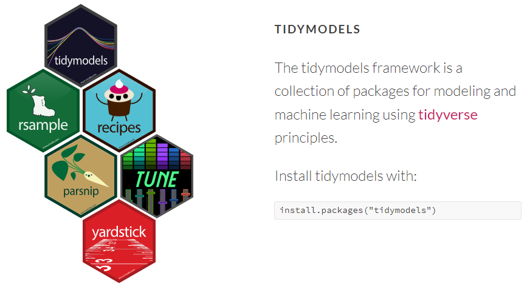
1.1 Ventajas de tidymodels
- Sintaxis unificada: Proporciona una interfaz consistente (parsnip) para entrenar cientos de modelos de Machine Learning (regresión lineal, árboles de decisión, random forest, XGBoost, etc.) sin tener que aprender la sintaxis nativa de cada paquete específico.
- Diseño modular: Cada tarea del flujo de trabajo (dividir datos, limpiar, entrenar, evaluar) cuenta con un paquete especializado y cohesivo.
- Integración con Tidyverse: Se integra perfectamente con pipes (
|>o|>), estructuras de datos tipotibbley funciones de manipulación de datos habituales. - Prevención de fuga de datos: Gracias al uso de recipes y workflows, el preprocesamiento de datos se calcula únicamente sobre los conjuntos de entrenamiento, aplicando las mismas transformaciones de forma segura en validación o prueba.
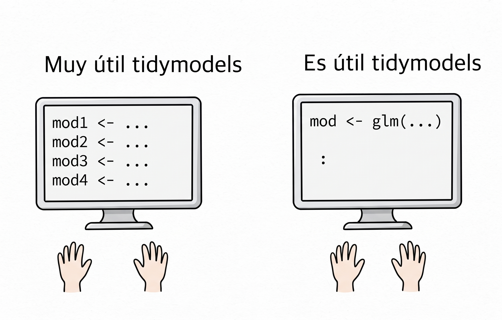
A continuación tenemos un ejemplo de tres random forests para regresión utilizando tres paquetes diferentes:
Tener que memorizar tantos nombres de parámetros y diferentes formas de ingresar los datos es estresante.
1.2 Material para aprender
Existe un extenso material en la web que se puede utilizar para aprender sobre tidymodels.
Página web https://www.tidymodels.org
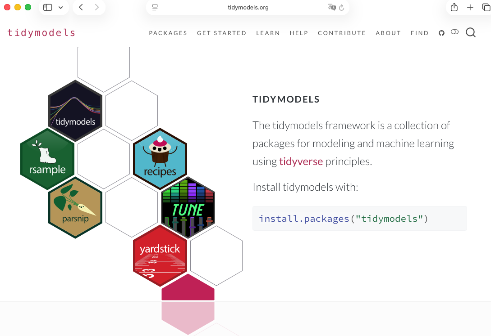
Libro “Tidy Modeling with R”
El libro se puede consultar en https://www.tmwr.org.
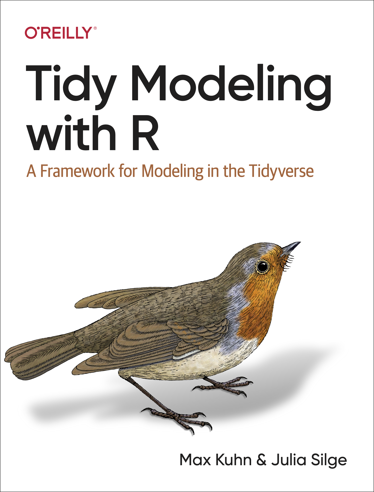
Libro “Machine Learning with Tidymodels”
El libro se puede consultar en https://gedeck.github.io/machine-learning-with-tidymodels/.
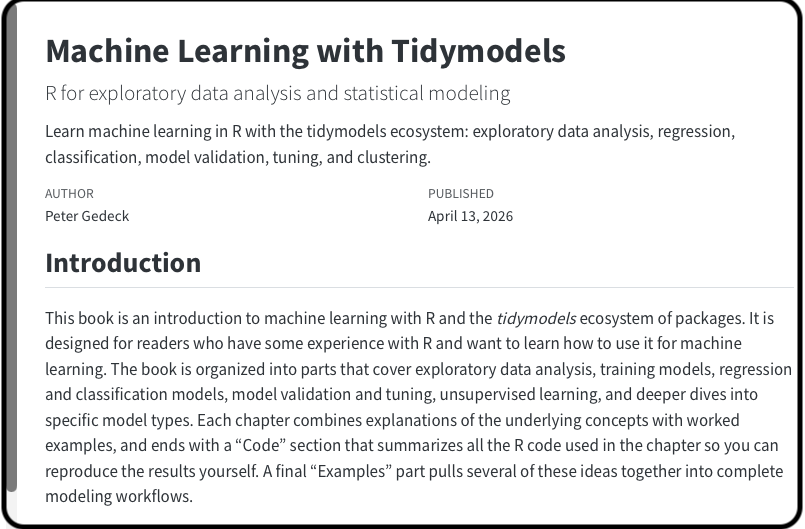
Video tidymodels en 39 minutos
1.3 Equipo desarrollador
El equipo de trabajo de tidymodels tiene a varios colaboradores que se pueden consultar en este enlace.
1.4 Instalación y carga
Se puede instalar paquete por paquete o todo el ecosistema de tidymodels de la siguiente manera:
install.packages("tidymodels")
library(tidymodels)── Attaching packages ────────────────────────────────────── tidymodels 1.5.0 ──✔ broom 1.0.13 ✔ recipes 1.4.0
✔ dials 1.4.3 ✔ rsample 1.3.2
✔ dplyr 1.2.1 ✔ tailor 0.1.0
✔ ggplot2 4.0.3 ✔ tidyr 1.3.2
✔ infer 1.1.0 ✔ tune 2.1.0
✔ modeldata 1.5.1 ✔ workflows 1.3.0
✔ parsnip 1.6.0 ✔ workflowsets 1.1.1
✔ purrr 1.2.2 ✔ yardstick 1.4.0 ── Conflicts ───────────────────────────────────────── tidymodels_conflicts() ──
✖ purrr::discard() masks scales::discard()
✖ dplyr::filter() masks stats::filter()
✖ dplyr::lag() masks stats::lag()
✖ recipes::step() masks stats::step()1.5 Cheat sheets
Todos los paquetes de tidymodels tienen una hoja de trucos (cheat sheets) que contiene explicaciones de las funciones más importantes de cada paquete. Consultarlas es una forma rápida para entender la utilidad de cada paquete.
En el siguiente enlace se pueden consultar todas las hojas de trucos.
https://www.tidymodels.org/cheatsheets/
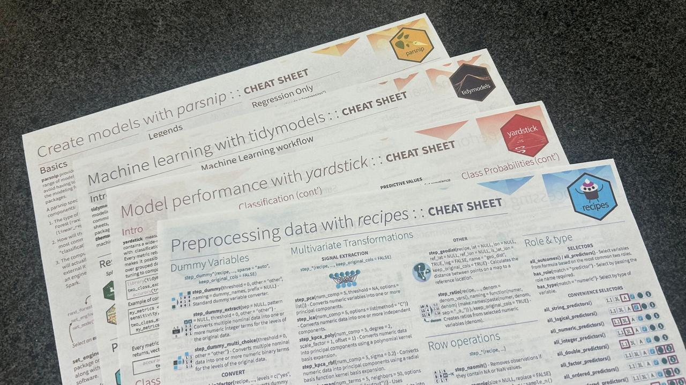
2 Estructura del taller
El taller tendrá las siguientes actividades:
- Mirar y analizar códigos para realizar una tarea.
- Completar códigos para realizar una tarea.
3 Datos de ejemplo (toy data)
En esta sección vamos a mostrar los datos que vamos a utilizar como ejemplo. La idea de estos datos sencillos y con pocas observaciones y variables, es que podamos ver la utilidad de las funciones sin que los datos se roben el protagonismo.
gen_dat <- function(n) {
dni <- round(10000000 * runif(n=n), digits=6)
dni <- as.integer(dni)
exp <- rpois(n, lambda=10) # Cuanti 1 (Predictora)
edad <- sample(22:65, n, replace = TRUE) # Cuanti 2 (Predictora)
educa <- factor(sample(c("Posgrado", "Universitario", "Tecnico"),
n, replace = TRUE),
levels=c("Tecnico",
"Universitario",
"Posgrado")) # Cuali 1 (Predictora)
depto <- factor(sample(c("Ventas", "IT", "Finanzas"),
n, replace = TRUE),
levels=c("Ventas", "IT", "Finanzas")) # Cuali 2 (Predictora)
# Creando la variable respuesta
media <- 3 + 5 * edad + 2 * exp +
3 * (depto == "IT") +
4 * (depto == "Finanzas") +
10 * (educa == "Universitario") +
15 * (educa == "Posgrado")
salario <- rnorm(n, mean = media, sd = 10) # (Variable Respuesta de interés)
datos <- data.frame(exp=exp, edad=edad,
educa=educa, depto=depto,
dni=dni, salario=salario)
}
set.seed(123)
datos <- gen_dat(n=10)
datos exp edad educa depto dni salario
1 15 40 Posgrado Finanzas 2875775 260.8674
2 11 57 Tecnico IT 7883051 311.4860
3 5 35 Posgrado Ventas 4089769 206.2979
4 4 38 Posgrado IT 8830174 186.7268
5 13 64 Universitario Ventas 9404672 351.2821
6 11 60 Tecnico Ventas 455564 327.8655
7 11 33 Tecnico Finanzas 5281054 181.7949
8 10 36 Posgrado Ventas 8924190 222.3455
9 8 53 Tecnico IT 5514350 295.0018
10 15 63 Posgrado Ventas 4566147 361.3607Exploremos la estructura de nuestros datos.
glimpse(datos)Rows: 10
Columns: 6
$ exp <int> 15, 11, 5, 4, 13, 11, 11, 10, 8, 15
$ edad <int> 40, 57, 35, 38, 64, 60, 33, 36, 53, 63
$ educa <fct> Posgrado, Tecnico, Posgrado, Posgrado, Universitario, Tecnico,…
$ depto <fct> Finanzas, IT, Ventas, IT, Ventas, Ventas, Finanzas, Ventas, IT…
$ dni <int> 2875775, 7883051, 4089769, 8830174, 9404672, 455564, 5281054, …
$ salario <dbl> 260.8674, 311.4860, 206.2979, 186.7268, 351.2821, 327.8655, 18…
TipObjetivo
Crear un modelo de regresión (estadístico o ML) para predecir el salario en función de los predictores.
4 recipes
El paquete recipes se utiliza para el preprocesamiento y feature engineering. Permite definir una serie de pasos secuenciales (normalizar variables numéricas, imputar valores faltantes, crear variables dummy, etc.) antes de crear un modelo estadístico o un modelo de machine learning.
Recomendación: ver el siguiente video para profundizar.
TipTip
Ver el siguiente video para profundizar.
Veamos un ejemplo de la receta para una torta o pastel de zanahoria.
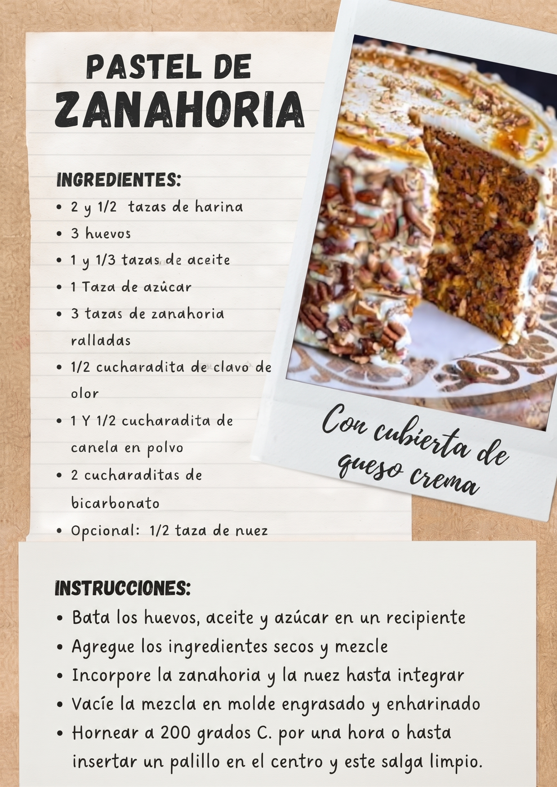
La función recipe() nos permite crear recetas para un modelo de interés, la estructura básica de la función es:
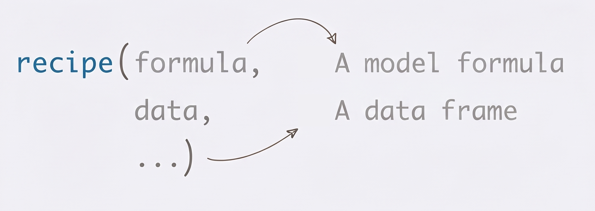
Existen muchas funciones en recipes que hacen transformaciones sobre las variables, algunas de ellas son:
step_range(min=0, max=1): convierte al intervalo [0, 1].step_center(): convierte la variable para que tenga media 0.step_normalize(): convierte la variable para que tenga media 0 y varianza 1.step_sqrt(): aplica \(\sqrt{.}\).step_log(): aplicar \(\log(.)\).- …
step_impute_bag()step_impute_knn()step_impute_linear()- …
Existen las funciones “selectors” o seleccionadores de variables, algunas de ellas son:
all_outcomes()all_predictors()all_numeric_predictors()all_factor_predictors()all_nominal()all_numeric()has_role()has_type()dplyr::select()
4.1 Ejemplo básico
Vamos a crear la receta para el modelo de interés.
rec1 <- recipe(salario ~ ., data=datos) |>
update_role(dni, new_role="ID") |>
step_range(edad, min=0, max=1) |>
step_sqrt(exp) |>
step_dummy(all_factor_predictors())
class(rec1)[1] "recipe"rec1── Recipe ──────────────────────────────────────────────────────────────────────── Inputs Number of variables by roleoutcome: 1
predictor: 4
ID: 1── Operations • Range scaling to [0,1] for: edad• Square root transformation on: exp• Dummy variables from: all_factor_predictors()Ahora vamos a “preparar” la receta.
pr1 <- prep(rec1, training=datos)
class(pr1)[1] "recipe"pr1── Recipe ──────────────────────────────────────────────────────────────────────── Inputs Number of variables by roleoutcome: 1
predictor: 4
ID: 1── Training information Training data contained 10 data points and no incomplete rows.── Operations • Range scaling to [0,1] for: edad | Trained• Square root transformation on: exp | Trained• Dummy variables from: educa depto | TrainedAhora vamos a “hornear” o crear un conjunto de datos nuevos usando la información de la receta “preparada”.
bake(pr1, new_data=datos)# A tibble: 10 × 8
exp edad dni salario educa_Universitario educa_Posgrado depto_IT
<dbl> <dbl> <int> <dbl> <dbl> <dbl> <dbl>
1 3.87 0.226 2875775 261. 0 1 0
2 3.32 0.774 7883051 311. 0 0 1
3 2.24 0.0645 4089769 206. 0 1 0
4 2 0.161 8830174 187. 0 1 1
5 3.61 1 9404672 351. 1 0 0
6 3.32 0.871 455564 328. 0 0 0
7 3.32 0 5281054 182. 0 0 0
8 3.16 0.0968 8924190 222. 0 1 0
9 2.83 0.645 5514350 295. 0 0 1
10 3.87 0.968 4566147 361. 0 1 0
# ℹ 1 more variable: depto_Finanzas <dbl>4.2 Ejemplo con datos faltantes NA
El paquete recipes tiene unas funciones para hacer imputación datos. Vamos a crear una copia de los datos y vamos a introducir manualmente unos NA’s para ver como hacer la imputación.
datos2 <- datos
datos2$exp[c(1, 2)] <- NA
datos2$educa[c(3, 4)] <- NA
datos2 exp edad educa depto dni salario
1 NA 40 Posgrado Finanzas 2875775 260.8674
2 NA 57 Tecnico IT 7883051 311.4860
3 5 35 <NA> Ventas 4089769 206.2979
4 4 38 <NA> IT 8830174 186.7268
5 13 64 Universitario Ventas 9404672 351.2821
6 11 60 Tecnico Ventas 455564 327.8655
7 11 33 Tecnico Finanzas 5281054 181.7949
8 10 36 Posgrado Ventas 8924190 222.3455
9 8 53 Tecnico IT 5514350 295.0018
10 15 63 Posgrado Ventas 4566147 361.3607Hay varias funciones para imputar datos faltantes, aquí vamos a usar dos de ellas, step_impute_bag y step_impute_knn.
rec2 <- recipe(salario ~ ., data = datos2) |>
step_impute_bag(educa) |>
step_impute_knn(exp)
pr2 <- prep(rec2, training = datos2)
bake(pr2, new_data = datos2)# A tibble: 10 × 6
exp edad educa depto dni salario
<int> <int> <fct> <fct> <int> <dbl>
1 9 40 Posgrado Finanzas 2875775 261.
2 9 57 Tecnico IT 7883051 311.
3 5 35 Posgrado Ventas 4089769 206.
4 4 38 Posgrado IT 8830174 187.
5 13 64 Universitario Ventas 9404672 351.
6 11 60 Tecnico Ventas 455564 328.
7 11 33 Tecnico Finanzas 5281054 182.
8 10 36 Posgrado Ventas 8924190 222.
9 8 53 Tecnico IT 5514350 295.
10 15 63 Posgrado Ventas 4566147 361.Comparemos con la base de datos que NO tiene los NA’s.
datos exp edad educa depto dni salario
1 15 40 Posgrado Finanzas 2875775 260.8674
2 11 57 Tecnico IT 7883051 311.4860
3 5 35 Posgrado Ventas 4089769 206.2979
4 4 38 Posgrado IT 8830174 186.7268
5 13 64 Universitario Ventas 9404672 351.2821
6 11 60 Tecnico Ventas 455564 327.8655
7 11 33 Tecnico Finanzas 5281054 181.7949
8 10 36 Posgrado Ventas 8924190 222.3455
9 8 53 Tecnico IT 5514350 295.0018
10 15 63 Posgrado Ventas 4566147 361.36074.3 Ejemplo con términos de interacción
Es posible incluir términos de interacción usando la función step_interact(). A continuación un ejemplo.
rec3 <- recipe(salario ~ ., data = datos) |>
update_role(dni, new_role="ID") |>
step_dummy(all_factor_predictors()) |>
step_interact(~ edad:starts_with("depto_"))
pr3 <- prep(rec3, training = datos)
bake(pr3, new_data = datos)# A tibble: 10 × 10
exp edad dni salario educa_Universitario educa_Posgrado depto_IT
<int> <int> <int> <dbl> <dbl> <dbl> <dbl>
1 15 40 2875775 261. 0 1 0
2 11 57 7883051 311. 0 0 1
3 5 35 4089769 206. 0 1 0
4 4 38 8830174 187. 0 1 1
5 13 64 9404672 351. 1 0 0
6 11 60 455564 328. 0 0 0
7 11 33 5281054 182. 0 0 0
8 10 36 8924190 222. 0 1 0
9 8 53 5514350 295. 0 0 1
10 15 63 4566147 361. 0 1 0
# ℹ 3 more variables: depto_Finanzas <dbl>, edad_x_depto_IT <dbl>,
# edad_x_depto_Finanzas <dbl>5 rsample
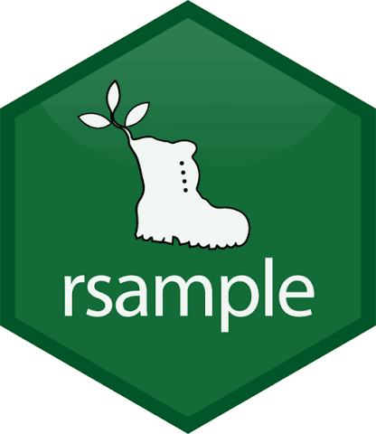
El paquete rsample gestiona la creación de muestras de datos para validación y evaluación, facilitando particiones comunes como entrenamiento/prueba (train/test splits) y esquemas de validación cruzada (cross-validation).
TipTip
Ver el siguiente video para profundizar.
Función principal
initial_split(data, # A data frame
prop = 3/4, # The proportion for train data
strata = NULL, # A variable in data
...)
Warningstrata
A variable in data (single character or name) used to conduct stratified sampling. When not NULL, each resample is created within the stratification variable. Numeric strata are binned into quartiles.
5.1 Ejemplo sin usar strata
Vamos a dividir nuestros datos en datos entrenamiento (60%) y datos de prueba (40%).
split_inf <- initial_split(datos, prop = 0.60)
split_inf<Training/Testing/Total>
<6/4/10>Usando la información de la partición que están en el objeto split_inf, podemos ahora si crear los dos conjuntos de datos nuevos.
train_data <- training(split_inf)
test_data <- testing(split_inf)Ahora comparemos los datos originales y las particiones.
datos exp edad educa depto dni salario
1 15 40 Posgrado Finanzas 2875775 260.8674
2 11 57 Tecnico IT 7883051 311.4860
3 5 35 Posgrado Ventas 4089769 206.2979
4 4 38 Posgrado IT 8830174 186.7268
5 13 64 Universitario Ventas 9404672 351.2821
6 11 60 Tecnico Ventas 455564 327.8655
7 11 33 Tecnico Finanzas 5281054 181.7949
8 10 36 Posgrado Ventas 8924190 222.3455
9 8 53 Tecnico IT 5514350 295.0018
10 15 63 Posgrado Ventas 4566147 361.3607train_data exp edad educa depto dni salario
1 13 64 Universitario Ventas 9404672 351.2821
2 10 36 Posgrado Ventas 8924190 222.3455
3 15 40 Posgrado Finanzas 2875775 260.8674
4 11 57 Tecnico IT 7883051 311.4860
5 11 60 Tecnico Ventas 455564 327.8655
6 15 63 Posgrado Ventas 4566147 361.3607test_data exp edad educa depto dni salario
1 5 35 Posgrado Ventas 4089769 206.2979
2 4 38 Posgrado IT 8830174 186.7268
3 11 33 Tecnico Finanzas 5281054 181.7949
4 8 53 Tecnico IT 5514350 295.00185.2 Ejemplo usando strata con variable cualitativa
¿Qué sucede si usamos el argumento strata?
split_inf <- initial_split(datos, strata = educa, prop = 0.60)
split_inf<Training/Testing/Total>
<5/5/10>train_data <- training(split_inf)
test_data <- testing(split_inf)
train_data exp edad educa depto dni salario
1 4 38 Posgrado IT 8830174 186.7268
2 10 36 Posgrado Ventas 8924190 222.3455
3 15 63 Posgrado Ventas 4566147 361.3607
4 11 33 Tecnico Finanzas 5281054 181.7949
5 8 53 Tecnico IT 5514350 295.0018test_data exp edad educa depto dni salario
1 15 40 Posgrado Finanzas 2875775 260.8674
2 11 57 Tecnico IT 7883051 311.4860
3 5 35 Posgrado Ventas 4089769 206.2979
4 13 64 Universitario Ventas 9404672 351.2821
5 11 60 Tecnico Ventas 455564 327.86555.3 Ejemplo usando strata con variable cuantitativa
¿Qué sucede si usamos el argumento strata?
split_inf <- initial_split(datos, strata = salario, prop = 0.60)Warning: The number of observations in each quantile is below the recommended threshold
of 20.
• Stratification will use 0 breaks instead.Warning: Too little data to stratify.
• Resampling will be unstratified.split_inf<Training/Testing/Total>
<6/4/10>train_data <- training(split_inf)
test_data <- testing(split_inf)
train_data exp edad educa depto dni salario
1 11 57 Tecnico IT 7883051 311.4860
2 5 35 Posgrado Ventas 4089769 206.2979
3 4 38 Posgrado IT 8830174 186.7268
4 11 33 Tecnico Finanzas 5281054 181.7949
5 8 53 Tecnico IT 5514350 295.0018
6 15 63 Posgrado Ventas 4566147 361.3607test_data exp edad educa depto dni salario
1 15 40 Posgrado Finanzas 2875775 260.8674
2 13 64 Universitario Ventas 9404672 351.2821
3 11 60 Tecnico Ventas 455564 327.8655
4 10 36 Posgrado Ventas 8924190 222.34556 parsnip
El paquete parsnip unifica la interfaz de construcción de modelos de aprendizaje automático. En lugar de recordar la sintaxis específica de paquetes como stats, randomForest o xgboost, se declara el modelo, el motor (engine) y el modo de tarea.
La estructura para especificar un modelo es la siguiente:
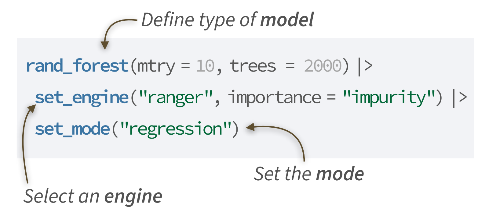
¿Existe un listado de los modelos implementados en tidymodels?
Sí, existe una herramienta interactiva con filtros para seleccionar el modelo de interés, la url a visitar es https://www.tidymodels.org/find/parsnip/.
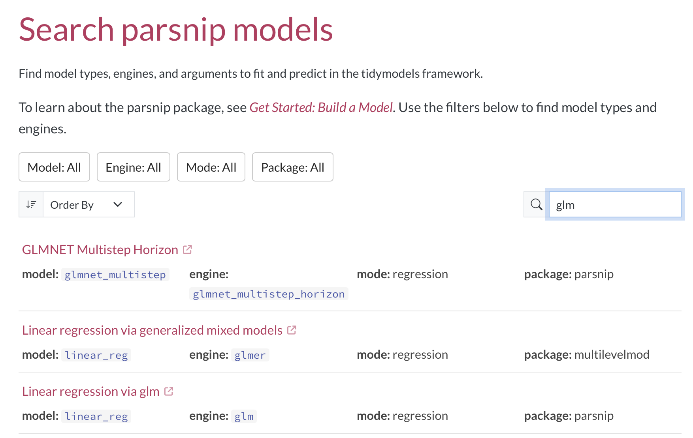
6.1 Ejemplo básico
Vamos a definir tres especificaciones de modelo: una regresión lineal, un modelo lineal generalizado (respuesta gamma y enlace log) y un random forest.
# Regresion lineal
lm_spec <- linear_reg() |>
set_engine("lm") |>
set_mode("regression")
# Modelo lineal generalizado
glm_spec <- linear_reg() |>
set_engine("glm", family = stats::Gamma(link = "log")) |>
set_mode("regression")
# Random forest
rf_spec <-
rand_forest() |>
set_engine("ranger") |>
set_mode("regression")7 workflows
El paquete workflows (o flujos de trabajo) sirve para automatizar, organizar y conectar tareas repetitivas en un orden específico.
La estructura básica de un flujo de trabajo se muestra a continuación. El objeto xx_spec se reemplaza por una las especificaciones que se hayan definido antes: lm_spec, glm_spec o rf_spec. Dependiendo de la especificación usada, el nombre del flujo xx_wflow cambia. Por ejemplo, si usamos el la especifiación glm_spec, entonces el flujo lo podemos llamar glm_wflow.
xx_wflow <- workflow() |>
add_recipe(rec1) |>
add_model(xx_spec)
# Fit the model
xx_fit <- fit(xx_wflow, data=train_data)7.1 Ejemplo básico
Vamos a crear los tres flujos y a entrenar los tres modelos especificados anteriormente.
# Vamos a aumentar la cantidad de datos para poder entrenar bien
set.seed(123)
datos <- gen_dat(n=1000)
split_inf <- initial_split(datos, strata = salario, prop = 0.60)
train_data <- training(split_inf)
test_data <- testing(split_inf)
# Create the workflow
lm_wflow <- workflow() |>
add_recipe(rec1) |>
add_model(lm_spec)
glm_wflow <- workflow() |>
add_recipe(rec1) |>
add_model(glm_spec)
rf_wflow <- workflow() |>
add_recipe(rec1) |>
add_model(rf_spec)
# Fit the model
lm_fit <- fit(lm_wflow, data=train_data)
glm_fit <- fit(glm_wflow, data=train_data)
rf_fit <- fit(rf_wflow, data=train_data)Ahora vamos a predecir la variable de interés usando train y usando test para uno de los modelos entrenados.
lm_fit |>
predict(new_data = train_data)# A tibble: 600 × 1
.pred
<dbl>
1 180.
2 155.
3 167.
4 191.
5 179.
6 189.
7 148.
8 161.
9 160.
10 171.
# ℹ 590 more rowslm_fit |>
predict(new_data = test_data)# A tibble: 400 × 1
.pred
<dbl>
1 190.
2 325.
3 255.
4 274.
5 225.
6 165.
7 315.
8 337.
9 204.
10 334.
# ℹ 390 more rows7.2 Ejemplo básico - Estimando con nueva información
Ahora vamos a ver cómo estimar la variable de interés para unos datos nuevos.
nuevo <- data.frame(exp=c(5, 8, 3),
edad=c(20, 29, 31),
educa=c("Tecnico", "Universitario", "Posgrado"),
depto=c("IT", "Finanzas", "Ventas"),
dni=c(1, 2, 3))
lm_fit |>
predict(new_data = nuevo)# A tibble: 3 × 1
.pred
<dbl>
1 126.
2 178.
3 176.¿Será posible resumir las predicciones anteriores en un número para evaluar si el modelo realiza bien su trabajo de predicción?
Rta: sí.
8 yardstick
El paquete yardstick calcula las métricas de rendimiento para evaluar qué tan bien se desempeñan los modelos (por ejemplo: exactitud, sensibilidad, especificidad, AUC-ROC para clasificación, o RMSE, R-cuadrado para regresión).
En la hoja de trucos del paquete podemos encontrar muchas métricas, algunas de ellas se muestran en la siguiente figura:
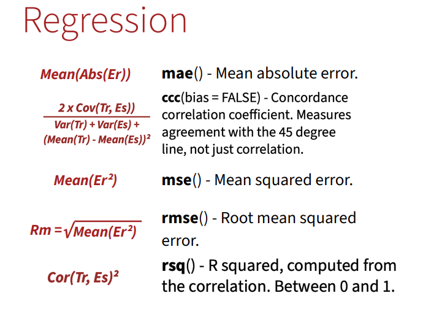
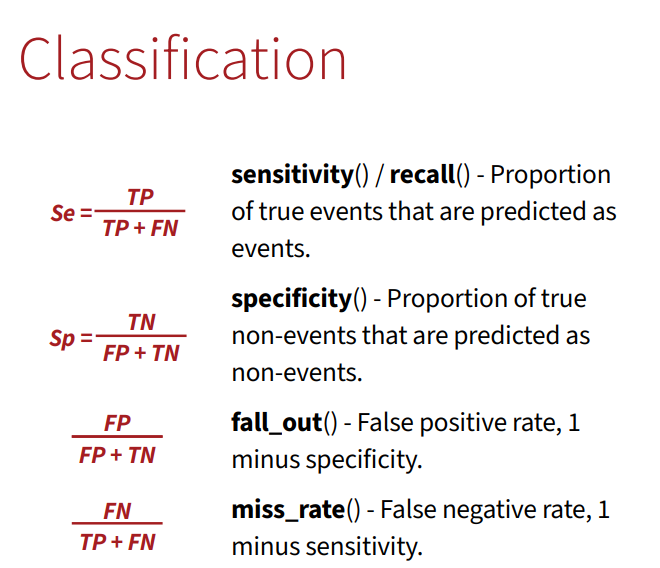
8.1 Ejemplo básico
Calcular las métricas Rsq y MSE para las predicciones obtenidas con los datos de entrenamiento y usando los modelos entrenados.
lm_results <-
lm_fit |>
predict(new_data = train_data) |>
mutate(truth = train_data$salario)
my_metrics <- metric_set(rsq, mse)
lm_results |>
my_metrics(truth = truth, estimate = .pred)# A tibble: 2 × 3
.metric .estimator .estimate
<chr> <chr> <dbl>
1 rsq standard 0.978
2 mse standard 95.3 glm_results <-
glm_fit |>
predict(new_data = train_data) |>
mutate(truth = train_data$salario)
my_metrics <- metric_set(rsq, mse)
glm_results |>
my_metrics(truth = truth, estimate = .pred)# A tibble: 2 × 3
.metric .estimator .estimate
<chr> <chr> <dbl>
1 rsq standard 0.963
2 mse standard 167. rf_results <-
rf_fit |>
predict(new_data = train_data) |>
mutate(truth = train_data$salario)
my_metrics <- metric_set(rsq, mse)
rf_results |>
my_metrics(truth = truth, estimate = .pred)# A tibble: 2 × 3
.metric .estimator .estimate
<chr> <chr> <dbl>
1 rsq standard 0.974
2 mse standard 241. ¿Será que podemos confiar en estos resultados puntuales o podemos hacer algo adicional?
9 Remuestreo - validación cruzada
Los métodos de remuestreo permiten evaluar de forma fiable el rendimiento de un modelo y ajustar sus hiperparámetros utilizando repetidamente subconjuntos de los datos de entrenamiento para evitar el sobreajuste.
A continuación se muestran algunos de los tipos de remuestro que se pueden utilizar.
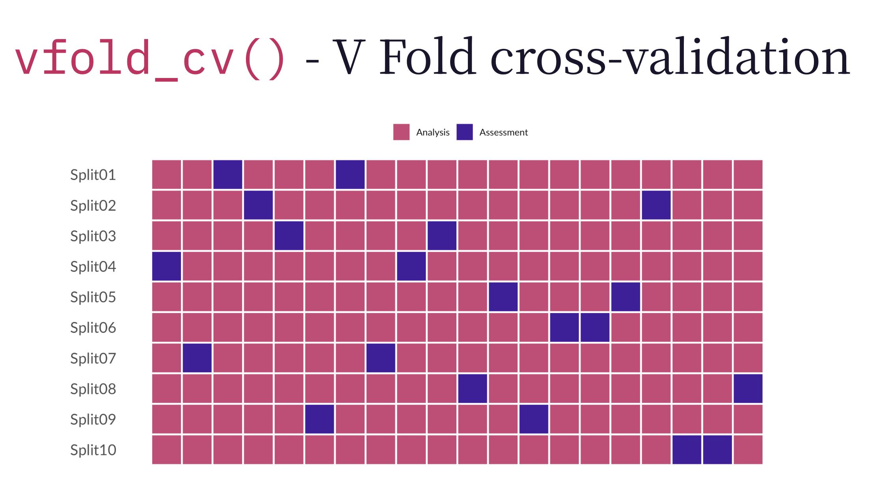
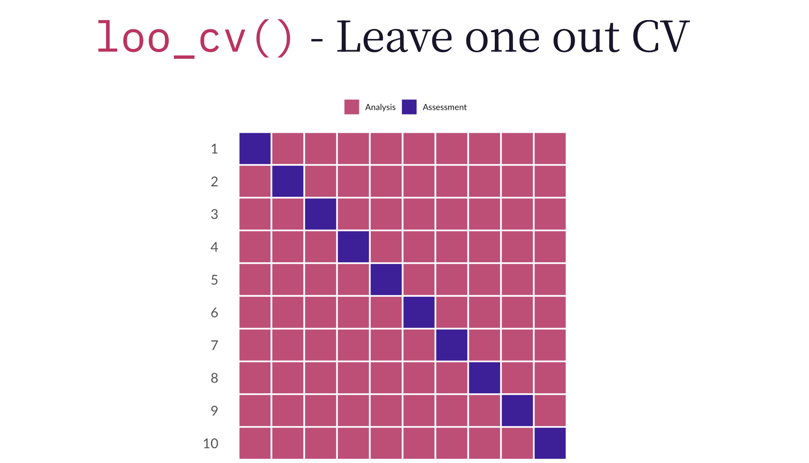
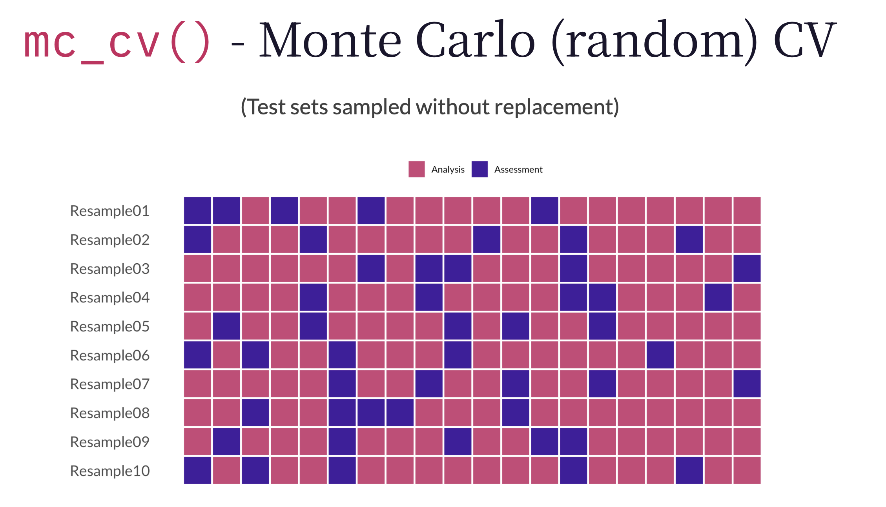
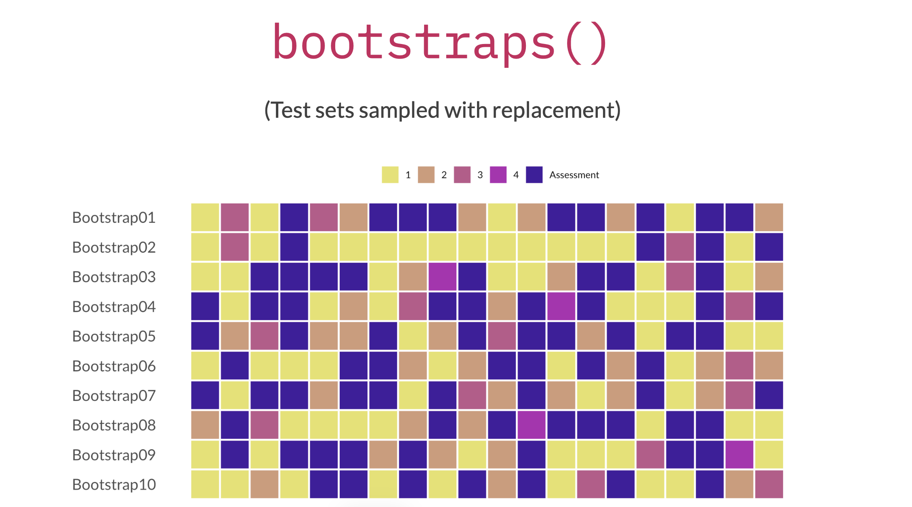
9.1 Ejemplo básico
Vamos a explorar el uso de la función vfold_cv sin y con el argumento strata.
# Sin usar strata
set.seed(100) # Important!
folds <- vfold_cv(data = train_data, v = 10)
folds# 10-fold cross-validation
# A tibble: 10 × 2
splits id
<list> <chr>
1 <split [540/60]> Fold01
2 <split [540/60]> Fold02
3 <split [540/60]> Fold03
4 <split [540/60]> Fold04
5 <split [540/60]> Fold05
6 <split [540/60]> Fold06
7 <split [540/60]> Fold07
8 <split [540/60]> Fold08
9 <split [540/60]> Fold09
10 <split [540/60]> Fold10# Usando strata = variable respuesta
set.seed(100) # Important!
folds <- vfold_cv(data = train_data, v = 10,
strata = salario, breaks = 4)
folds# 10-fold cross-validation using stratification
# A tibble: 10 × 2
splits id
<list> <chr>
1 <split [540/60]> Fold01
2 <split [540/60]> Fold02
3 <split [540/60]> Fold03
4 <split [540/60]> Fold04
5 <split [540/60]> Fold05
6 <split [540/60]> Fold06
7 <split [540/60]> Fold07
8 <split [540/60]> Fold08
9 <split [540/60]> Fold09
10 <split [540/60]> Fold10¿Se puede usar fit() para entrenar un modelo cuando tenemos cross-validation?
Rta: no.
La función fit_resamples() del paquete tune es la función que nos ayudará a ajustar modelos con remuestreo. Los argumentos más importantes de la función son:
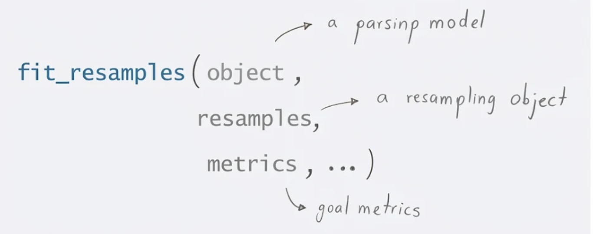
9.2 Ejemplo básico
Vamos a crear una partición con vfold_cv() y luego vamos a utilizar fit_resamples() para el primer modelo.
lm_results <-
lm_wflow |>
fit_resamples(resamples = folds,
metrics = metric_set(rsq, mse))
lm_results |>
collect_metrics(summarize = FALSE)# A tibble: 20 × 5
id .metric .estimator .estimate .config
<chr> <chr> <chr> <dbl> <chr>
1 Fold01 rsq standard 0.969 pre0_mod0_post0
2 Fold01 mse standard 123. pre0_mod0_post0
3 Fold02 rsq standard 0.983 pre0_mod0_post0
4 Fold02 mse standard 70.1 pre0_mod0_post0
5 Fold03 rsq standard 0.982 pre0_mod0_post0
6 Fold03 mse standard 80.6 pre0_mod0_post0
7 Fold04 rsq standard 0.982 pre0_mod0_post0
8 Fold04 mse standard 83.9 pre0_mod0_post0
9 Fold05 rsq standard 0.976 pre0_mod0_post0
10 Fold05 mse standard 96.4 pre0_mod0_post0
11 Fold06 rsq standard 0.977 pre0_mod0_post0
12 Fold06 mse standard 116. pre0_mod0_post0
13 Fold07 rsq standard 0.977 pre0_mod0_post0
14 Fold07 mse standard 105. pre0_mod0_post0
15 Fold08 rsq standard 0.972 pre0_mod0_post0
16 Fold08 mse standard 115. pre0_mod0_post0
17 Fold09 rsq standard 0.981 pre0_mod0_post0
18 Fold09 mse standard 89.9 pre0_mod0_post0
19 Fold10 rsq standard 0.980 pre0_mod0_post0
20 Fold10 mse standard 95.3 pre0_mod0_post0lm_results |>
collect_metrics(summarize = TRUE)# A tibble: 2 × 6
.metric .estimator mean n std_err .config
<chr> <chr> <dbl> <int> <dbl> <chr>
1 mse standard 97.5 10 5.41 pre0_mod0_post0
2 rsq standard 0.978 10 0.00150 pre0_mod0_post0Ahora vamos a realizar lo anterior para los otros dos modelos.
glm_results <-
glm_wflow |>
fit_resamples(resamples = folds,
metrics = metric_set(rsq, mse))
glm_results |>
collect_metrics(summarize = TRUE)# A tibble: 2 × 6
.metric .estimator mean n std_err .config
<chr> <chr> <dbl> <int> <dbl> <chr>
1 mse standard 172. 10 11.6 pre0_mod0_post0
2 rsq standard 0.963 10 0.00197 pre0_mod0_post0rf_results <-
rf_wflow |>
fit_resamples(resamples = folds,
metrics = metric_set(rsq, mse))
rf_results |>
collect_metrics(summarize = TRUE)# A tibble: 2 × 6
.metric .estimator mean n std_err .config
<chr> <chr> <dbl> <int> <dbl> <chr>
1 mse standard 333. 10 31.3 pre0_mod0_post0
2 rsq standard 0.956 10 0.00368 pre0_mod0_post0Usando los resultados promedios de las métricas anteriores, ¿cuál modelo se perfila como el mejor modelo?
Rta: el primer modelo porque tiene menor MSE y mayor Rsq.
10 tune
El paquete tune permite optimizar los hiperparámetros de los modelos y realizar validación cruzada para encontrar la mejor configuración que evite el sobreajuste (overfitting).
La función tune_grid() del paquete tune permite evaluar sistemáticamente combinaciones de hiperparámetros de un modelo o flujo de trabajo mediante remuestreo, facilitando la identificación de la configuración con mejor rendimiento predictivo.
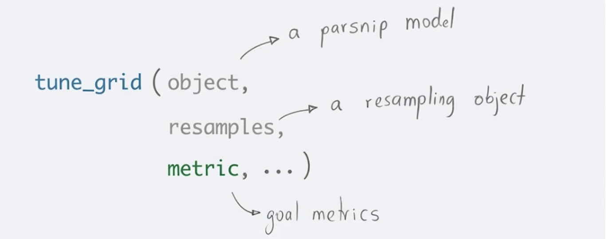
10.1 Ejemplo básico
rf_tuner <-
rand_forest(mtry = tune(),
min_n = tune(),
trees = 50
) |>
set_engine("ranger") |>
set_mode("regression")
rf_wflow <- workflow() |>
add_recipe(rec1) |>
add_model(rf_tuner)
rf_tune_results <-
rf_wflow |>
tune_grid(resamples = folds,
metrics = metric_set(rsq, mse))i Creating pre-processing data to finalize 1 unknown parameter: "mtry"show_best(rf_tune_results, metric = "mse")# A tibble: 5 × 8
mtry min_n .metric .estimator mean n std_err .config
<int> <int> <chr> <chr> <dbl> <int> <dbl> <chr>
1 5 10 mse standard 133. 10 7.80 pre0_mod09_post0
2 6 27 mse standard 138. 10 9.28 pre0_mod10_post0
3 4 23 mse standard 139. 10 11.4 pre0_mod07_post0
4 3 6 mse standard 156. 10 17.1 pre0_mod05_post0
5 4 40 mse standard 161. 10 15.6 pre0_mod08_post0show_best(rf_tune_results, metric = "rsq")# A tibble: 5 × 8
mtry min_n .metric .estimator mean n std_err .config
<int> <int> <chr> <chr> <dbl> <int> <dbl> <chr>
1 5 10 rsq standard 0.970 10 0.00215 pre0_mod09_post0
2 4 23 rsq standard 0.969 10 0.00238 pre0_mod07_post0
3 6 27 rsq standard 0.969 10 0.00244 pre0_mod10_post0
4 3 6 rsq standard 0.967 10 0.00319 pre0_mod05_post0
5 4 40 rsq standard 0.965 10 0.00304 pre0_mod08_post0best_parameters <- select_best(rf_tune_results, metric = "mse") |>
select(-.config)
best_parameters# A tibble: 1 × 2
mtry min_n
<int> <int>
1 5 10best_workflow <- rf_wflow |>
finalize_workflow(best_parameters) |>
fit(train_data)
df <- tibble(
actual = test_data$salario,
predicted = predict(best_workflow, new_data = test_data)$.pred
)
ggplot(df, aes(x = actual, y = predicted)) +
geom_point() +
geom_abline()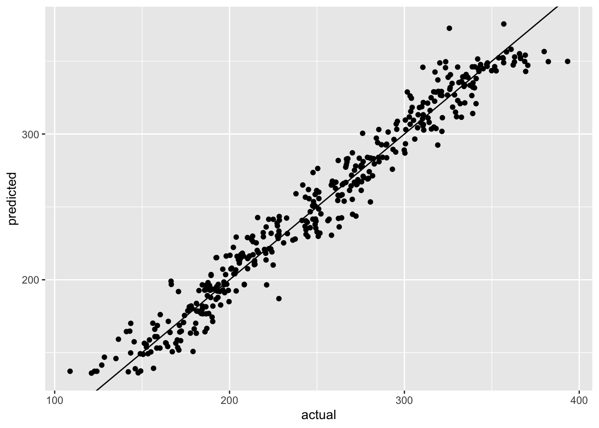
11 Ejemplo integrador
En esta sección unificamos todos los paquetes anteriores en un flujo de trabajo formal (workflow) completo de principio a fin, aplicando preprocesamiento, entrenamiento y evaluación en una sola tubería coherente.
12 Reto
¡Es hora de poner en práctica lo aprendido!